До чемпионата: двадцать лет всесоюзных стартов
Первый чемпионат СССР появился не на пустом месте. В октябре 1963 года в Ужгороде состоялись первые всесоюзные соревнования по ориентированию; но для получения полноценного чемпионатного статуса потребовались годы становления правил, картографии, судейства и системы отбора. В конце 1960-х спортивная карта постепенно переставала быть лишь условным приложением к туристскому походу. Четвёртые всесоюзные соревнования в сентябре 1969 года под Теребенью (Калужская область), карту к которым готовила бригада Виктора Алёшина, в хронике ФСОР названы картографической «революцией». Работа с точной картой становилась самостоятельным спортивным умением.
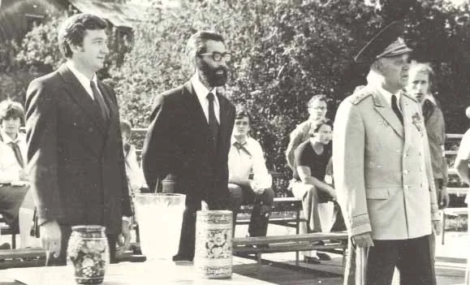
Федерация спортивного ориентирования СССР была учреждена на пленуме 28 апреля 1979 года, и вид спорта вошёл в систему Спорткомитета СССР. Её первым президентом стал генерал-лейтенант Иван Лисов, недавний заместитель командующего ВДВ (хроника ФСОР). Теперь состязания могли опираться на общесоюзный календарь и более устойчивую организационную систему. Как вспоминал главный организатор первого чемпионата Никита Благово, лучших на всесоюзных стартах между собой и прежде называли чемпионами страны, но это был неофициальный титул: всесоюзное первенство статуса чемпионата СССР не имело («Первый чемпионат — как это было»). В карьере ориентировщика было большое отличие между победой на сильном всесоюзном старте и впервые официально присуждённым званием чемпиона СССР.
Первый титул и одиннадцать чемпионатов
Одиннадцать чемпионатов, десятки лесов и первые национальные титулы: от трёх гонок на Карельском перешейке до последней эстафеты 1991 года.
- Начало
- 1981, Ленинградская область
- Финал
- 1991, Павлово
- Чемпионатов
- 11
- Главные соперники
- Ленинград, РСФСР и республики Прибалтики
1981: титул впервые разыгран на Карельском перешейке

Всесоюзные соревнования по ориентированию проводились с 1963 года, но первый официальный чемпионат СССР состоялся только летом 1981-го. На параде открытия 4 августа под Выборгом выстроились 118 спортсменов, в том числе 76 мастеров спорта: сборные союзных республик (кроме Армении, Таджикистана и Туркмении), Москвы и Ленинграда, по восемь человек в каждой. Центром соревнований был Зеленогорск, главным судьёй — Иван Лисов. Организаторы устроили не один «главный забег», а три разных испытания — в разных районах северной части Карельского перешейка и на разных картах.
4 августа на Сайменских дачах выиграли лично-командную гонку Игорь Захаров и Сармите Габране. 5 августа на озере Уловном победили мужская эстафета Эстонской ССР и женская команда Ленинграда — Светлана Березина, Ирина Иванова, Надежда Левичева. В личной гонке 6 августа в Вещево первыми стали Борис Прокофьев и вновь Сармите Габране; именно их «Советский спорт» назвал первыми чемпионами, а Кубок за общекомандную победу достался Ленинграду. Тем не менее вопрос «кто был первым чемпионом СССР?» требует уточнения конкретной дисциплины. Подробности подготовки — в историческом архиве первого чемпионата на O-Site.
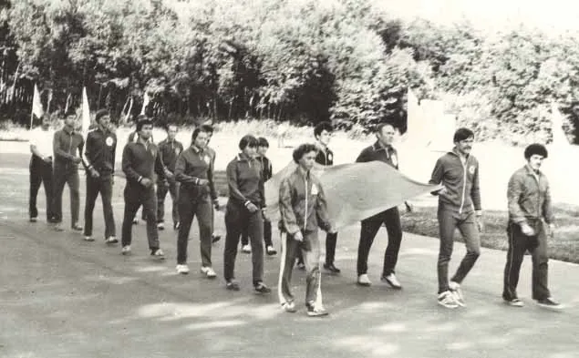
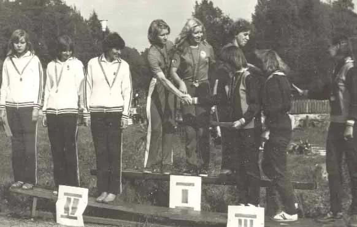
1982–1987: соревнование объезжает весь Союз

Следующий чемпионат оказался в Псковской области. На личной дистанции 25 августа 1982 года в Мякишеве победили Михаил Святкин и Надежда Левичева — ленинградская пара, определившая раннюю историю первенств. Эстафеты 27 августа в Лукавце выиграли мужская команда Эстонии и женская команда Литвы. Сохранилась даже кинохроника чемпионата 1982 года: редкая возможность увидеть эту эпоху не только по протоколам. Итоги тогда же подвела «Великолукская правда» — «Чемпионы названы».
Далее чемпионат принимали Цесис, Тарту, Вижница, Каркаралинск и Свердловск. Эта география объясняет силу ориентирования как школы: спортсменам приходилось быстро приспосабливаться к иному рельефу и картографическому рисунку — от балтийских лесов до горных районов Казахстана.
Стадионный бег, ведомственные команды и почти забытые особенности программы
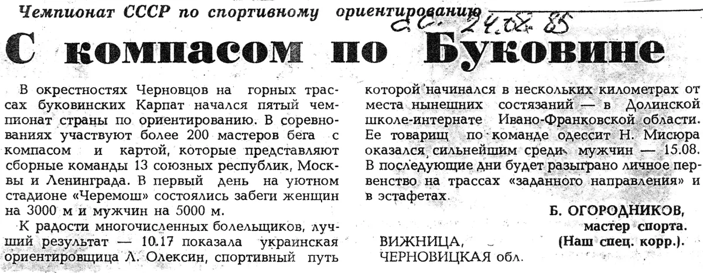
Сегодня трудно представить чемпионат по ориентированию со сдачей беговых нормативов на стадионе. Однако программа чемпионата 1985 года в Вижнице включала отдельный бег на «Черемоше»: 5000 м у мужчин и 3000 м у женщин. Среди мужчин первым финишировал Николай Мисюра, вслед за ним — Иван Кузьмин и Айгарс Лейбомс; среди женщин победила Лидия Олексин (репортаж «Советского спорта» «С компасом по Буковине»). Эта часть программы характеризует время, когда спортивное ориентирование оценивали не только через точность навигации, но и через общую легкоатлетическую подготовленность.
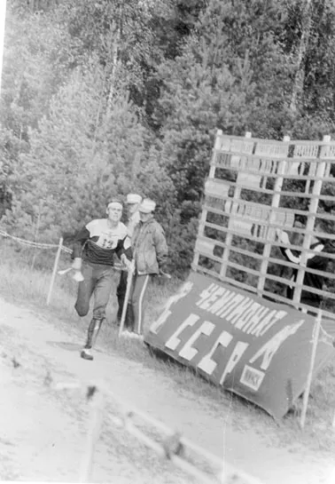
Подобные испытания отражены и в программах свердловского чемпионата 1987 года (стадион «Уралмаш», программа), и минского 1988 года (стадион «Динамо», где сдавали нормативы). При этом состав соревнований был неоднородным. Например, в Тарту в 1984 году выступали команды спортивных обществ и ведомств, а не просто сборные территорий; общий зачёт выиграла команда Советской армии и Военно-морского флота, впереди «Труда» и «Динамо». Победа команды здесь была не только личным успехом, но и престижем большой спортивной организации.
Путешествие по разным типам местности
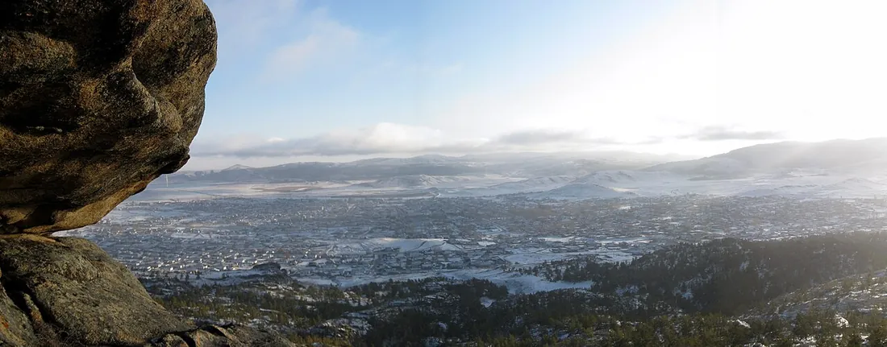
Чемпионат страны был одновременно путешествием по нескольким совершенно разным традициям картографии. В Тарту и Цесисе часто требовалась тонкая работа на сложной сети дорожек и микрорельефе; в Вижнице спортсменов встречали карпатские склоны, в Каркаралинске — лесистые горы Казахстана, а в районе Свердловска — уральская местность. Менялись и физическая нагрузка, и выбор пути, и привычные условные знаки старых карт.
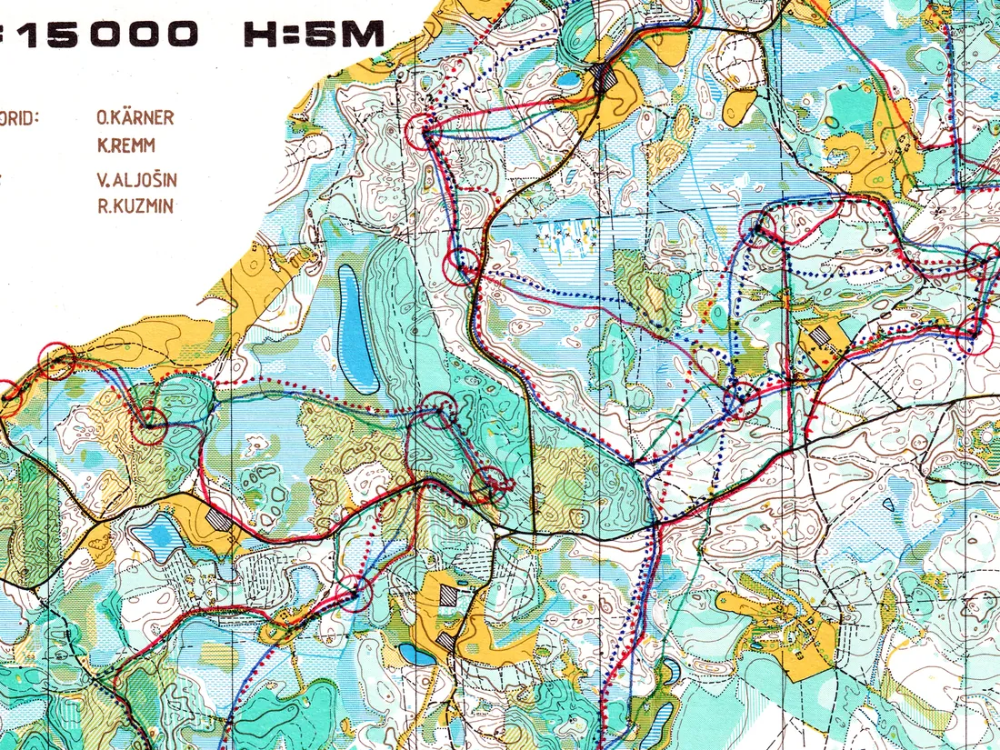
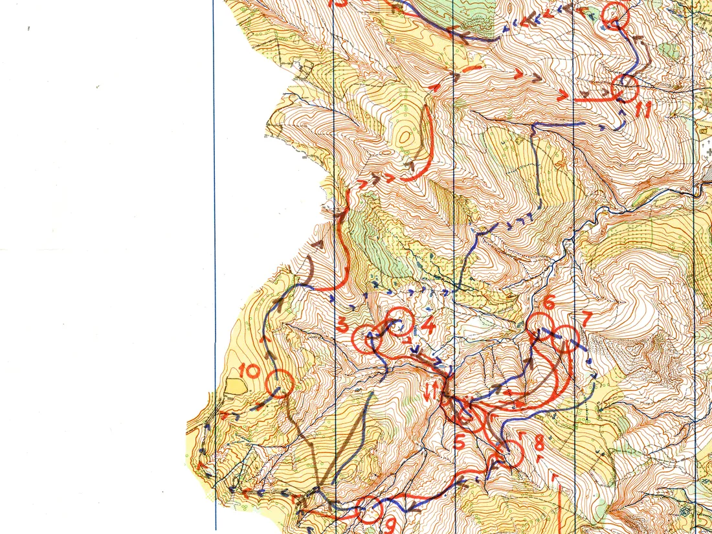
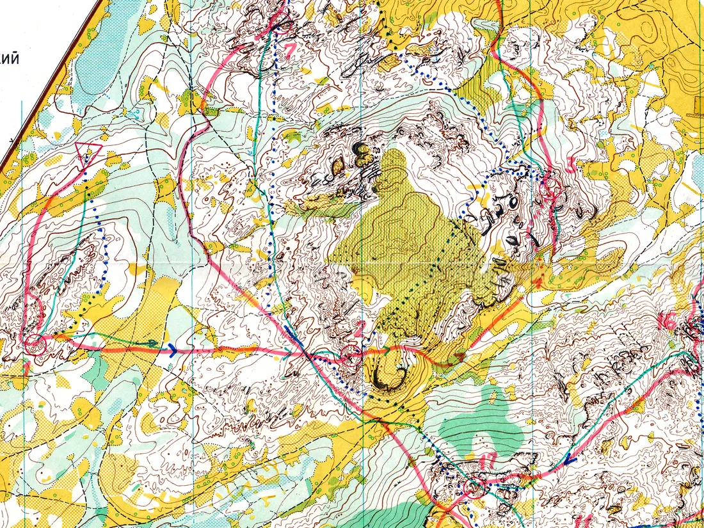
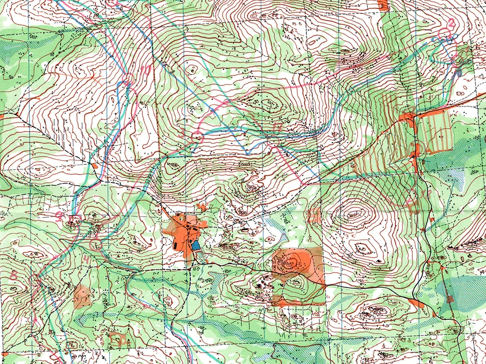
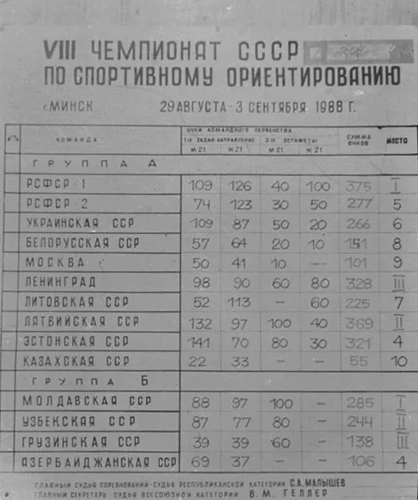
В Каркаралинске в 1986 году общекомандный зачёт группы А выиграл Ленинград, второй стала Литовская ССР, третьей — первая команда РСФСР. В Минске в 1988-м победила РСФСР-1. По этим итогам видно, что расстановка сил не сводилась к бессменному лидерству одной республики: сильные школы возникали в Ленинграде, центральной России, на Урале, в Прибалтике и других регионах.
Балтийская школа и выход на мировой уровень
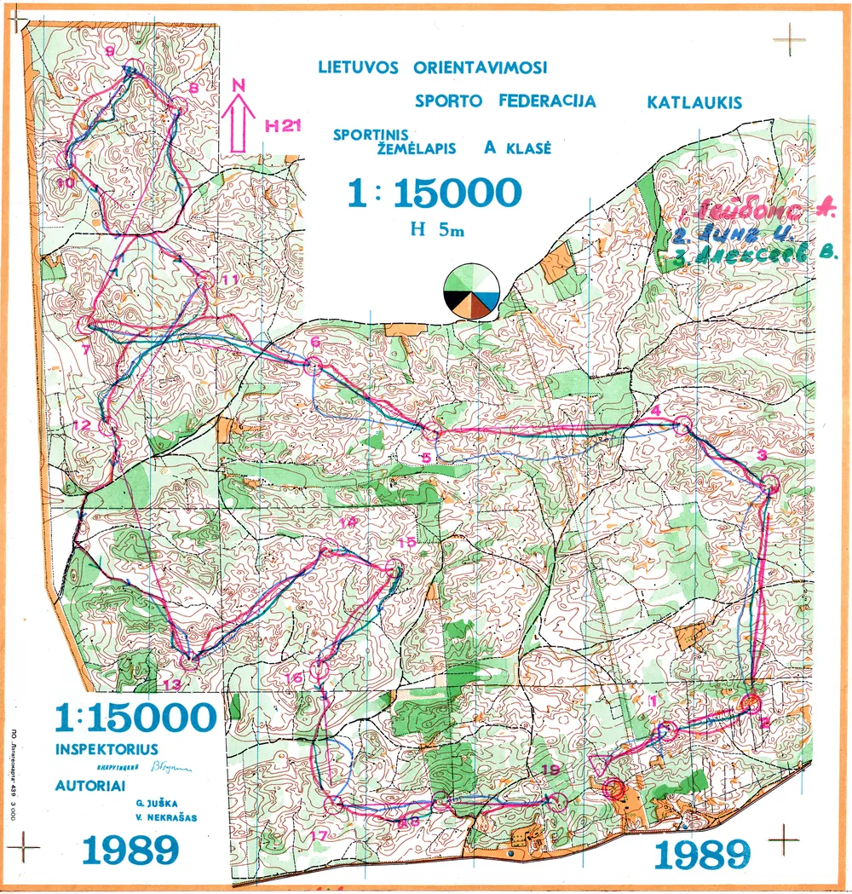
Параллельно менялось само положение ориентирования в стране: спортивные карты постепенно становились доступнее, появлялись новые возможности международных выступлений. В 1989 году Алида Абола принесла СССР первую медаль чемпионата мира в беговом ориентировании — бронзу на классической дистанции в шведском Шёвде. По мотивам этого успеха Московский турклуб выпустил тиражом 10 000 экземпляров буклет с картой и путями движения призёров.
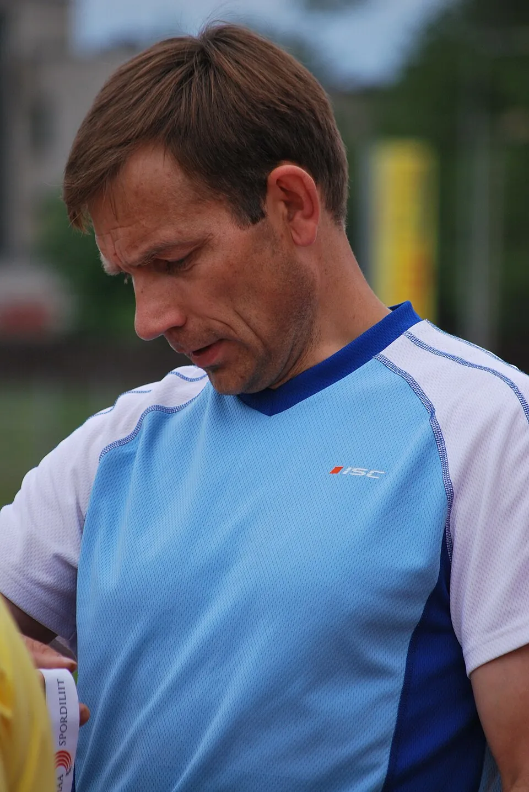
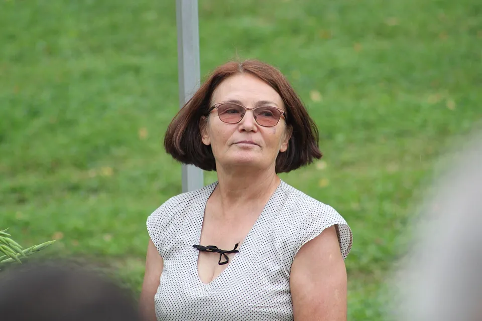
1990–1991: последнее прибалтийское лето и последняя эстафета
Десятый чемпионат прошёл 24–27 августа 1990 года в Плявинясе (Латвийская ССР). В его программе были лично-командные и личные гонки, затем эстафета. Ленинградские команды дважды поднялись на вторую ступень эстафетного пьедестала. У мужчин в четвёрку входили Михаил Святкин, Владимир Алексеев, Олег Анучкин и Олег Мельников; у женщин — Надежда Левичева, Светлана Березина, Ирина Степанова и Александра Папкова.
Год спустя одиннадцатый чемпионат в Павлово оказался последним. На короткой дистанции 28 июля 1991 года в Рылькове победили Айгарс Лейбомс и Ираида Никитина; мужскую эстафету 31 июля в Горбатове выиграл Ленинград — Михаил Святкин, Олег Анучкин, Олег Мельников и Илья Гусев. Через несколько месяцев СССР перестал существовать, а традицию национального чемпионата продолжила Россия.
Но смена государственного названия не означала исчезновения спортсменов, тренеров или картографов. Их опыт перешёл в региональные федерации новых государств, а российские чемпионаты унаследовали как сильнейших спортсменов, так и сложившийся календарь.
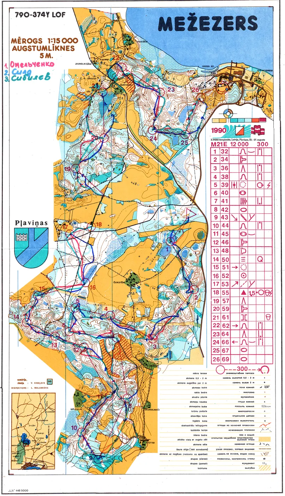
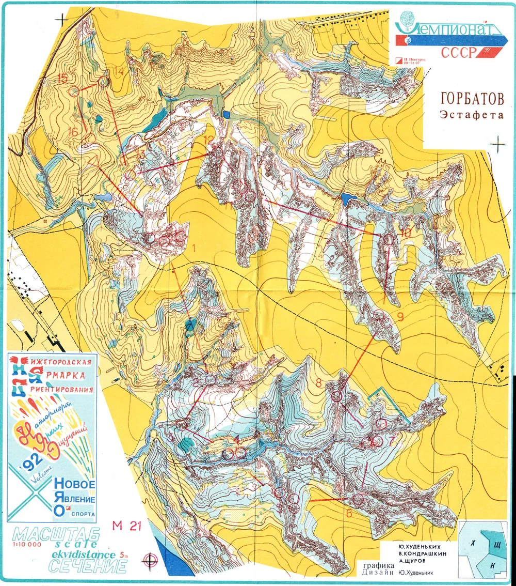
Зачем смотреть карту, а не только итоговый протокол
У гонки на Сайменских дачах 1981 года в архиве сохранилась карта с нанесёнными путями движения, а у дистанции 1982 года в Мякишеве — карта Михаила Святкина. Это не просто рисунки леса: они позволяют сопоставить варианты движения, увидеть, где участники срезали по азимуту, а где предпочитали дорожную сеть.
Старые бумажные карты особенно интересны сегодня: на них заметна другая генерализация, иной способ рисовать рельеф и растительность, а также эволюция отношения к «очевидным» вариантам движения. Именно поэтому в статье важны ссылки на архив документов и видеозапись 1982 года: они дополняют имена чемпионов конкретными свидетельствами той эпохи.
Как фиксировали посещение КП: карандаши, штампы и компостеры
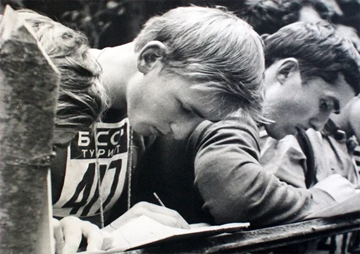
В первых десятилетиях отечественного ориентирования у судей не было электронных чипов и станций. Д. Я. Финкель в заметке «Эволюция систем отметки КП» описывает даже самый ранний способ контроля: на КП лежал протокол, в который пришедший участник вписывал фамилию и расписывался. Затем распространились цветные карандаши: сначала спортсмены делали записи на самой карте, позднее — крестики определённого цвета. Каждому КП соответствовал свой цвет, а судьи на финише проверяли последовательность отметок. На старых стартах встречались и штемпели, и экспериментальные дыроколы.
В книге Е. И. Иванова «Начальная подготовка ориентировщика» (1985) прямо описан вариант с перечёркиванием кружков КП на карте цветными карандашами. Там же упомянуты компостеры с разным расположением зубьев и резиновые штампы с буквами или цифрами. Позже привычной стала контрольная карточка: специальный компостер на каждом пункте оставлял в своём окошке неповторимый рисунок проколов. Это упрощало проверку правильности дистанции, но судейской бригаде приходилось вручную разбирать множество карточек.
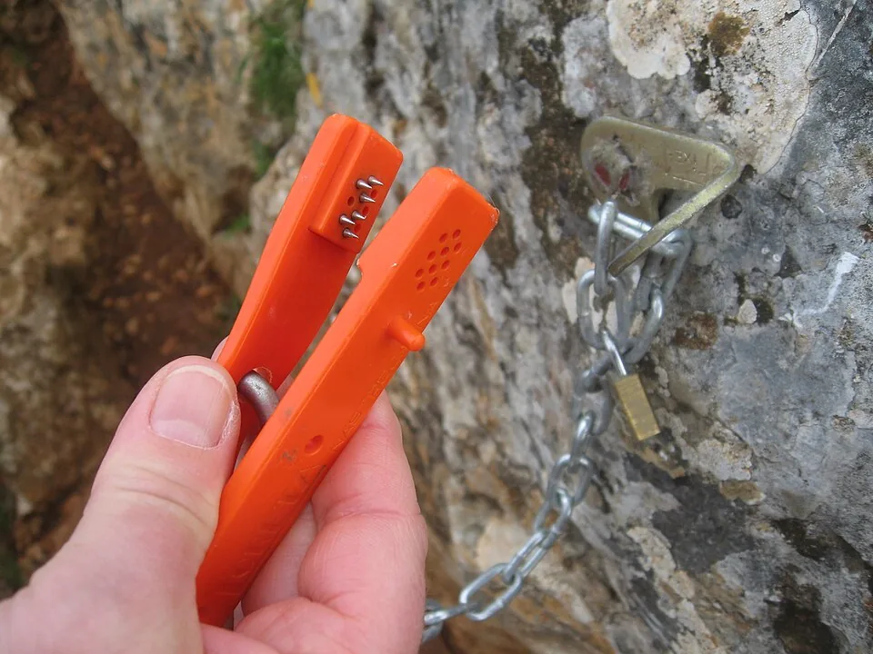
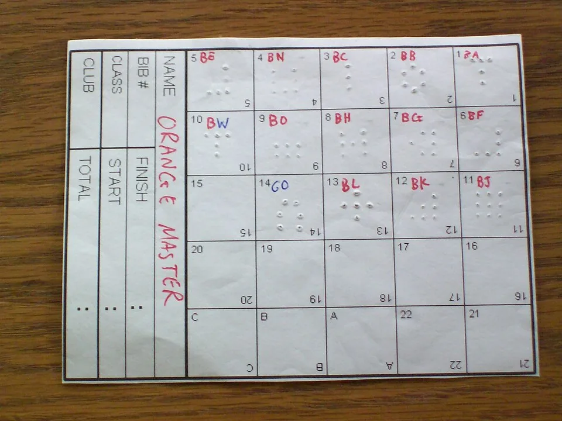
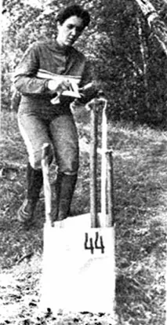
В докомпьютерную эпоху существовал и своеобразный «живой протокол»: от карточки спортсмена отрывали талон с результатом и прикрепляли к верёвочному табло, постоянно переставляя финишировавших по местам. Эта деталь передаёт атмосферу эпохи советских чемпионатов лучше любой современной онлайн-трансляции. Точный тип отметки на каждом из чемпионатов СССР по сохранившимся документам пока не установлен, поэтому нельзя автоматически приписывать всем гонкам 1981–1991 годов какую-то одну систему.
Прикоснуться к старому способу отметки можно было и значительно позже. Например, ретро-старт 4 августа 2019 года в Линдуловской роще — там, где в 1959 году прошли первые официальные соревнования по ориентированию в Ленинграде, — организовали по чёрно-белой карте старого образца и с отметкой карандашом в карточке.
Смотреть
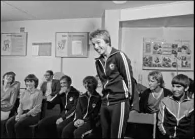
Уникальная сохранившаяся кинохроника II чемпионата СССР (1982, Великие Луки и Алоль) доступна на двух площадках: RuTube, YouTube.
Источники
Даты, места, результаты и карты — O-Maps календарь чемпионатов СССР по ориентированию бегом; история соревнований и хронология — История ФСОР; архивы чемпионатов — документы O-Maps, первый чемпионат СССР (1981), Н. В. Благово, «Первый чемпионат — как это было», история ориентирования на orient.by, статьи «Советского спорта» и «Великолукской правды» из архива O-Maps; чемпионат мира 1989 — Википедия; история систем отметки — Д. Я. Финкель (2024), Е. И. Иванов (1985).Посмотреть архив: документы первого чемпионата СССР · видео чемпионата 1982 года · бюллетени и протоколы.